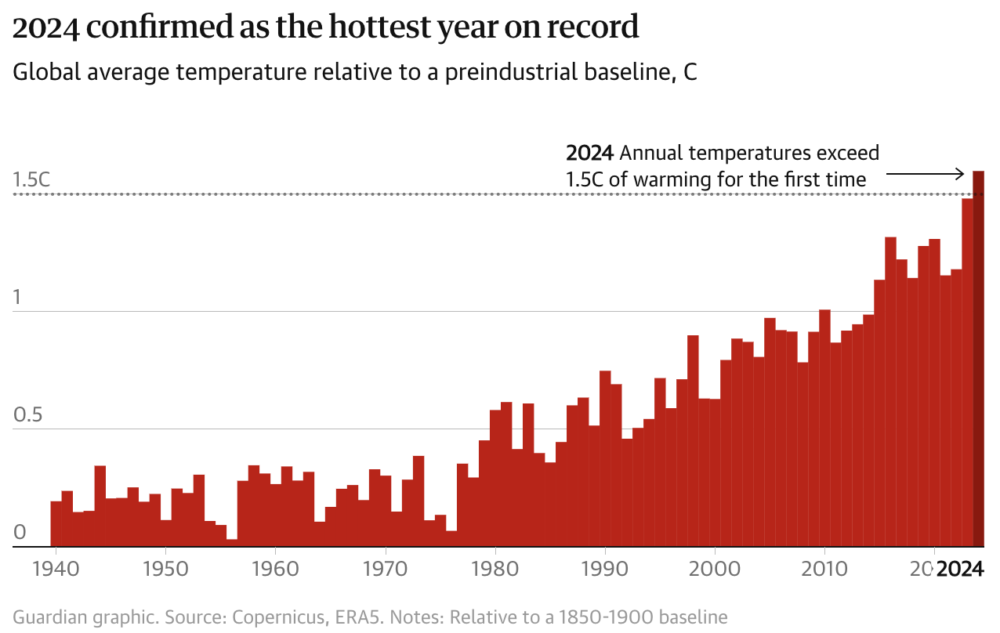

Donating for the climate in 2025
Happy New Year! Every January since I started making money, I’ve donated some of it. Even though my contributions are small relative to the scale of the world’s big problems, I think it’s important to do what I can.
In the past, I’ve donated to UNICEF, Ocean Conservancy, and Earthjustice. This year, two main issues have been on my mind. First, the suffering caused by multiple ongoing wars, and second, climate change. 2024 was once again the hottest year on record by global average surface temperature. We have now exceeded the 1.5C degrees of warming target set by the Paris Agreement. (Source: The Guardian)

This year, I chose three organizations to donate to:
1. Doctors without Borders (link)
I wanted to help the people suffering due to violent conflict in Gaza, Sudan, Ukraine, and elsewhere. In addition, Doctors without Borders is addressing the very real health impacts of climate change, due to climate-related disasters, malnutrition, and disease.
2. Climate Justice Alliance (link)
I was looking for an organization that focused on environmental justice, a topic that I studied heavily at Williams-Mystic. Back then, I wrote a policy brief (described here) for which I interviewed Chief Devon Parfait of the Grand Caillou/Dulac Band of Biloxi-Chitimacha-Choctaw. We discussed the local solutions his community is implementing in southern Louisiana, such as building a community center that doubles as a storm shelter and restoring wetlands damaged by oil extraction and storms. When I asked what policy changes would help, he identified the complexity of applying for government grants and then meeting all the subsequent administrative requirements as a major burden. While large nonprofit organizations are able to hire people for this purpose, small local groups can’t afford to do so. The end result is that communities that already possess few resources don’t get the funding they need. In places that have faced environmental racism (like placing polluting facilities in mostly nonwhite communities), this is just one more obstacle.
“Grants take up so much of my plate. If I had the money and resources to do all the work I wanted, I would not have the capacity to do it.”
– Chief Devon Parfait
Climate Justice Alliance addresses this issue by helping small grassroots environmental justice organizations access funds. While reading about the organization, I also heard concerning news: The EPA promised $50 million in Inflation Reduction Act funds to Climate Justice Alliance in 2023, to be distributed to local groups, but the money has still not come through. With the incoming Trump administration determined to “choke off” environmental justice funding, things are not looking good. I tried sending a message to the Acting EPA Administrator, but we don’t know if the funds will come through. Nevertheless, I’m donating the small amount I can contribute to the work that they do.
3. Giving Green (link)
A many-sided problem like climate change requires many solutions. This organization directs funds to projects like decreasing emissions from heavy industry and livestock, advancing geothermal energy, and supporting the energy transition in low- and middle-income countries. Technology will not absolve us of the need to make systemic changes to society, but technology does have a crucial role to play. This video by Kurzgesagt explains that recent advancements in clean energy tech (solar, wind, and batteries) have far exceeded our expectations, placing clean energy at a clear economic advantage over fossil fuels. Further technological advancements will hasten our transition away from fossil fuels.
Enjoy Reading This Article?
Here are some more articles you might like to read next: